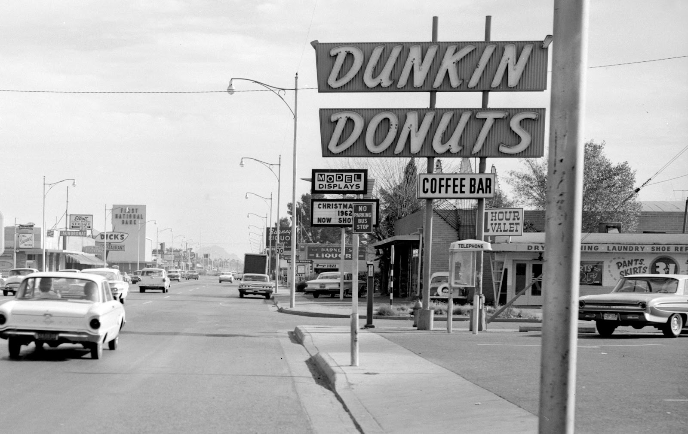

Bill Rosenberg opened Open Kettle in 1948, a restaurant selling donuts and coffee in Quincy, Massachusetts (a suburb of Boston), but he changed the name in 1950 to Dunkin' Donuts after discussing with company executives. He conceived the idea for the restaurant after his experiences selling food in factories and at construction sites, where donuts and coffee were the two most popular items. The restaurant was successful, and Rosenberg sold franchises to others starting in 1955.

In 1963 Rosenberg's son Bob became CEO of the company at age 25, and Dunkin' Donuts opened its hundredth location that year. Dunkin' Donuts was a subsidiary of Universal Food Systems at the time, a conglomerate of 10 small food-service businesses, and Dunkin' Donuts locations varied greatly in their menu options, with some selling full breakfasts and others serving only donuts and coffee.
In the following years, the other businesses in the Universal Food Systems portfolio were sold or closed, and the company was renamed to Dunkin' Donuts. The menu and shop format was standardized, and various new menu items were introduced. In the early 1980s counter service and ceramic coffee cups were replaced by self-service counters and paper cups. The chain went public in 1968 and was acquired by Baskin-Robbins owner Allied Lyons in 1990. By 1998, the brand had grown to 2,500 locations worldwide with $2 billion in annual sales.
Dunkin' Donuts expanded in the 1990s by buying out two rival chains: Mister Donut and Dawn Donuts.
In 2004 the company's headquarters were relocated to Canton, Massachusetts. In December 2005 Dunkin' Donuts and Baskin-Robbins (by then, operating under the name Dunkin' Brands) were sold to a private equity consortium of Bain Capital, Carlyle Group, and Thomas H. Lee Partners for $2.4 billion. By 2010, Dunkin' Donuts' global sales were $6 billion.
In June 2013 Dunkin' Donuts unveiled a new store design, the brand's first in almost seven years.
The Dunkin' Donuts location in Natick, Massachusetts launched a program to test the concept of curbside pickup in December 2016.
In January 2018 Dunkin' Donuts began to open new concept locations, beginning in Quincy, featuring modern decor, cold beverages on tap and a single-cup brewing machine, more packaged take-out options, and dedicated pick-up lines for mobile ordering inside and in the drive-thru. The concept was described as being part of a shift towards becoming an "on-the-go, beverage-led brand". In addition, the location, as well as others, began to trial signage referring to the chain as simply "Dunkin'"—removing "Donuts" from the name.
In February 2018, Dunkin' announced plans to phase out polystyrene foam cups globally for environmental purposes by April 2020.
On July 11, 2018, Dave Hoffmann took over from Nigel Travis to become the CEO. He is looking to add 1,000 new locations outside of the Northeastern United States by the end of 2020 and to have a revenue increase of 3 percent for stores open a year or longer. Also late 2018, Dunkin' installed espresso machines at all possible locations and launched espresso products using a new recipe.
In June 2019, Dunkin' partnered with Grubhub to begin the rollout of its new Dunkin' Delivers service. Later in July 2019, Dunkin' partnered with Beyond Meat to introduce a meatless breakfast sandwich in Manhattan, becoming the first U.S. restaurant brand to serve Beyond Sausage. The sandwich launched nationally later in 2019.
In October 2020 Dunkin' Brands stated that the company was in conversation with Inspire Brands, a private equity-backed company, negotiating to sell the company. Inspire Brands announced on Saturday, October 31, 2020, that they would be acquiring Dunkin' Brands Group for $11.3 billion, which would include Dunkin' Brands' debt that Inspire Brands would be taking on. Inspire would pay $106.50 in cash for each of Dunkin' Brands' shares. On December 15, 2020, the acquisition was completed, and Dunkin' Brands ceased to exist as a separate company, with Dunkin', Baskin-Robbins, and the trademark management of Mister Donut, becoming part of Inspire Brands.